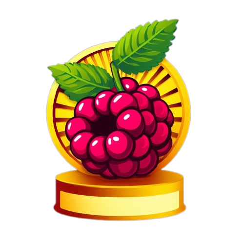

FILMES - Piores Filmes do Golden Raspberry Awards
FILTROS
Filtrar por ano
Filtrar
Por favor insira 4 caracteres para a busca...
Filtrar por vencedores
SIM/NÃO
SIM
NÃO
Limpar filtros
ID
ANO
TITULO
VENCEDOR
PRODUTORES
STUDIOS
{{ item.id }}
{{ item.year }}
{{ item.title }}
{{ item.winner ? 'SIM' : 'NÃO' }}
VER
VER
Não foi encontrado dados correspondente ao filtro
Carregando...